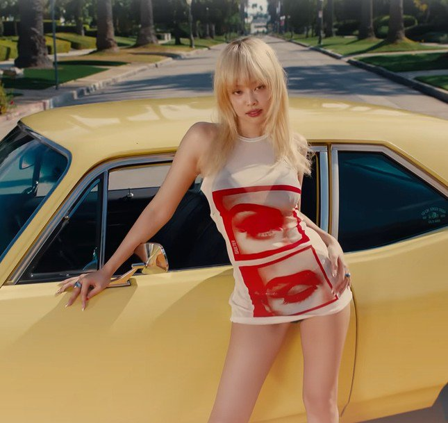

Ca khúc mới của Jennie (BlackPink) bị cấm sóng
Đĩa đơn mới nhất của Jennie, BlackPink, bị đài KBS ra lệnh cấm do vi phạm quy định về kiểm
duyệt phát sóng.
Ngày 23/10, đài KBS công bố kết quả đánh giá âm nhạc trên trang web chính thức. Đáng chú ý trong bài
đăng là Mantra của Jennie (BlackPink) và Unconditional của Jaehyun (NCT) bị loại khỏi chương trình phát
sóng.
Lý do đưa ra là hai bài hát vi phạm Điều 46 của Quy định về kiểm duyệt phát sóng, trong đó hạn chế hiệu
ứng quảng cáo. Cụ thể, lời bài hát mới của Jennie và Jaehyun được phát hiện có nhắc đến tên thương hiệu.

Ca khúc mới của Jennie và Jaehyun đều bị KBS cấm sóng vì nhắc đến tên thương hiệu cụ thể.
“Mantra của Jennie nhắc đến các thương hiệu như xe Defender và In-N-Out Burger, với những câu hát như ‘Chúng
tôi lái xe ngang qua In-N-Out’”, thông báo viết.
Tuy nhiên, theo KBS, đây không phải là lệnh cấm vĩnh viễn. Nhà đài có thể xem xét lại việc phát sóng nếu
những đoạn có vấn đề được sửa lại hoặc loại bỏ.
Mantra là đĩa đơn đầu tiên của Jennie với tư cách nghệ sĩ solo sau khi rời YG Entertainment và thành lập
công ty riêng. Bài hát mang thông điệp khuyến khích người nghe tự tin tỏa sáng theo cách độc đáo của riêng
mình.
Phát hành vào ngày 11/10, sức hút của Mantra vẫn chưa có dấu hiệu hạ nhiệt. Nó giữ vị trí thứ 8 trên bảng
xếp hạng toàn cầu của Spotify và lọt vào Top 100 Billboard (hạng 98) tính đến sáng 24/10.
Trong khi đó, Unconditional của Jaehyun chưa phát hành (dự kiến vào ngày 24/10) đã bị cấm sóng. Nam thần
tượng có thể cung cấp phiên bản sửa đổi để được xét duyệt.
Đây không phải là lần đầu KBS cấm bài hát có sự góp mặt Jennie. Khi Pink Venom của BlackPink ra mắt vào năm
2022, nó cũng không được lên sóng trên đài quốc gia do nhắc đến một thương hiệu cụ thể.
Động thái của KBS đến từ việc pháp luật Hàn Quốc cấm quảng cáo quá mức trên phương tiện truyền thông.
Một số cư dân mạng quốc tế cho rằng lý do ca khúc của Jennie bị cấm là "ngớ ngẩn", khắt khe quá mức. Tuy
nhiên, khán giả Hàn Quốc phản bác rằng tuân thủ pháp luật là nghĩa vụ cơ bản của công dân. Họ cũng đề cập
đến thực tế người xem thường bị khó chịu với những quảng cáo lộ liễu trên phim truyền hình xứ kim chi.
Bên cạnh đó, theo nhiều ý kiến, đài truyền hình quốc gia không bao giờ chấp nhận quảng cáo miễn phí cho bất
kỳ thương hiệu nào mà họ không ký kết hợp đồng truyền thông.
Ngoài ra, một số anti-fan cho rằng một bài hát với ca từ ngớ ngẩn như Mantra không chỉ nên bị cấm ở Hàn
Quốc, mà còn phải cả toàn thế giới.

Mantra bị cấm sóng vì nhắc đến thương hiệu xe và burger.
Cư dân mạng bình luận: “Một lý do khá là ngớ ngẩn”, “KBS tệ quá”, “Luật pháp Hàn Quốc cấm các kênh truyền hình quốc gia đề cập đến tên thương hiệu vì điều này có thể bị coi là quảng bá cho một số thương hiệu nhất định. Đừng gọi điều gì đó là ngu ngốc chỉ vì bạn không hiểu nó”, “Không phải không thể quảng cáo, mà vấn đề nằm ở tiền bạc. Thương hiệu được nhắc đến trong bài hát được tiếp thị miễn phí mà không mang lại lợi ích gì cho KBS”, “Hình ảnh sản phẩm trong phim truyền hình cũng bị làm mờ, không được quảng cáo lộ liễu quá”, “Lời bài hát ngớ ngẩn như thế nên bị cấm trên toàn thế giới, không chỉ trên KBS. Ai lại nói về burger trong nhạc của họ chứ?”, “Hãy tưởng tượng cảnh gà rán, bánh mì kẹp thịt, đồng hồ, ô tô và điện thoại xuất hiện trong phim truyền hình Hàn Quốc. Thật là táo bạo”, “Thật vô duyên khi phá hỏng một tác phẩm nghệ thuật bằng những quảng cáo tầm thường, hành vi này cần phải bị ngăn cấm chứ không phải được chấp nhận”, “Tôi không thấy bất kỳ thương hiệu nào được nhắc đến trong bài hát của Jennie. Nó ở đâu? Ngoài ra, tôi không ngạc nhiên với lệnh cấm này. Người hâm mộ hành động như thể đây là lần đầu tiên và họ ghét Jennie. Từ khi nào Blinks quan tâm đến chương trình âm nhạc trong nước? Tôi nghĩ BlackPink lớn hơn Kpop. Jennie không quan tâm và các bạn cũng nên làm như vậy”…